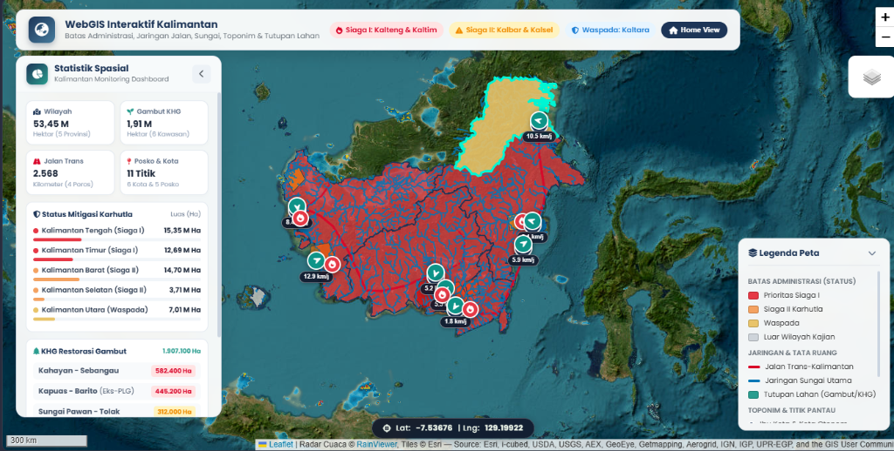
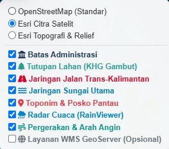
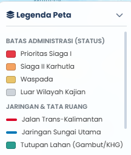
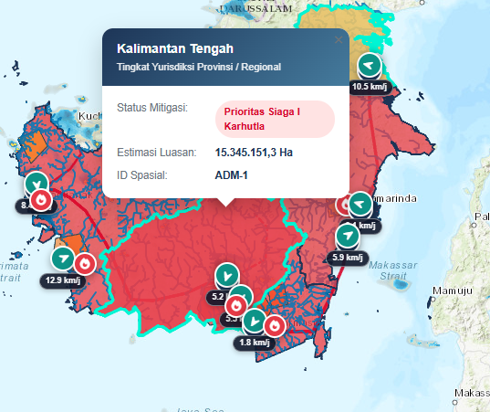
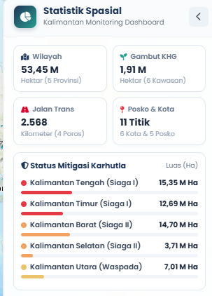
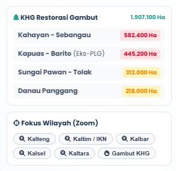
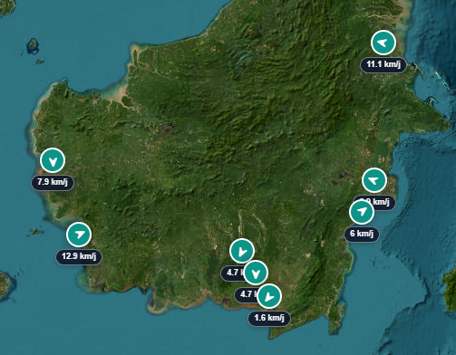
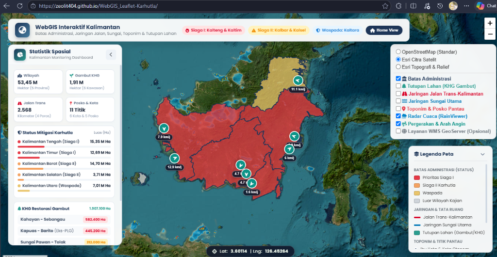

Konsep WebGIS dan Teknologi yang Digunakan
Kalimantan merupakan salah satu wilayah paling rawan kebakaran hutan dan lahan (Karhutla) di Indonesia. Dengan luas lahan gambut mencapai 1.907.100 Ha dan wilayah daratan 53,45 juta Ha, pemantauan spasial berbasis web menjadi krusial untuk mendukung mitigasi bencana.
Library JavaScript open-source untuk peta interaktif berbasis web
Format data spasial standar untuk pertukaran data geografi
Teknologi web standar untuk tampilan dan interaktivitas
Hosting statis gratis untuk deploy WebGIS secara publik
Antarmuka Peta dengan Basemap OpenStreetMap dan Semua Layer Aktif

Antarmuka WebGIS terdiri dari: Navbar (judul + indikator status siaga), Panel Statistik Spasial (kiri), Peta Interaktif (tengah), Layer Control (kanan atas), Legenda (kanan bawah), dan Koordinat Tracker (bawah tengah). Semua komponen dirancang responsif dan dapat di-toggle untuk memaksimalkan area peta.
3 Pilihan Basemap dan 8 Layer Overlay yang Dapat Diaktifkan
Peta jalan dan bangunan detail, cocok untuk navigasi umum
Citra satelit resolusi tinggi dari Esri World Imagery
Peta topografi dengan informasi elevasi dan relief


Batas Administrasi, Jalan, Sungai, Toponim, dan Tutupan Lahan

Choropleth polygon 5 provinsi dengan klasifikasi status:
Jalan Trans-Kalimantan (4 poros) dengan total 2.568 km. Ditampilkan sebagai garis merah putus-putus.
Sungai-sungai utama Kalimantan. Data disederhanakan dari 16MB menjadi 725KB menggunakan ST_Simplify.
11 titik penting: 6 ibu kota provinsi/kota dan 5 posko pantau karhutla. Masing-masing dengan marker icon berbeda.
Kawasan Hidrologi Gambut (KHG) dengan total 1.907.100 Ha meliputi kawasan restorasi gambut.
Panel Statistik Spasial, KHG Restorasi Gambut, dan Quick Zoom


53,45 M Hektar (5 Provinsi)
1,91 M Hektar (6 Kawasan)
2.568 Kilometer (4 Poros)
11 Titik (6 Kota & 5 Posko)
Total 1.907.100 Ha meliputi:
6 tombol navigasi cepat ke masing-masing provinsi dan kawasan gambut.
Radar Cuaca RainViewer dan Vektor Angin dari Open-Meteo API

WebGIS Live di GitHub Pages

GitHub Pages (gratis, tanpa batas waktu)
github.com/zeolit404/WebGIS_Leaflet-Karhutla
HTML + CSS + JavaScript + Leaflet.js (client-side rendering)